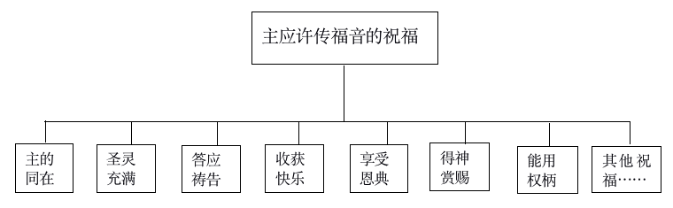
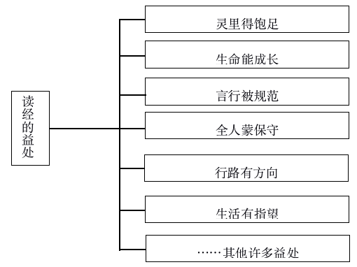

初为神子
目录
写在前面的话
亲爱的 弟兄/姊妹：
你知道吗？ 年 月 日，这是一个不寻常的日子——你成为一个基督徒了!这一天，你成为神的儿女了！这是一个荣耀的日子，这是一个奇妙的身份，这更是一个全新的开始!
好像移民一样，从今天开始，你踏上了一片陌生而又令人向往的国度，你将要开始一段世上最浪漫的旅程，你将要以神的儿女的身份，过一种世上最奇妙的生活！
怎样才能成为讨神喜欢的儿女？怎样的生活方式才能叫我们健康地成长？怎样才能有一个精彩的基督徒生活？……初为神子的你，要怎样告别旧生活，开始全新的生活呢？基督徒有哪些必须具备的良好习惯要建立呢？这本小册子，是专门针对初为神的儿女的弟兄姊妹而写的。小册子分为两个部分，一个是如何告别旧生活，一个是如何开始新生活，注重实际的基督徒生活的运用和指导，也有一些常见问题的解答，盼望能够成为你基督徒生活开始的小帮手，作你浪漫旅程的陪伴者。
你准备好了吗？现在我们就要开始为你拉开你基督徒生活的大幕啦！美妙的人生开始了！主与你同在！
编者
2018年8月 福州(再版）
一、告别旧生活
1、清楚“我得救了！”
你还记得吗？在你得救受浸之前，你身边的基督徒最关切的问题是什么？对了，就是问你：“你得救了吗？”今天，你可以理直气壮、昂首挺胸地回答：“我得救了！” 得救重生的标志有哪些呢？
1）求告主名是你得救的一个记号。圣经说：“凡求告主名的，就必得救。”（罗10：13）当你开口说“主耶稣啊！我相信你！”的那一刻，就是你得救的时刻。
2）受浸是你得救的明显记号。受浸不光你自己印象深刻，你受浸的时候，还有许多的弟兄姊妹在你身边为你作见证，他们都可以见证说：“你受浸了，必然得救了！”因为圣经明说：“信而受洗的必然得救。”（可16：16）你是真的成为神的儿女了！
3）神的话是你得救最有力的证明。神说我把圣经给你们，就是要叫你们知道自己是得救的，知道自己是有永生的。
4）对神的事有感觉证明你得救了。得救后，你会对圣经开始感兴趣，你看见信主的基督徒就莫名地感觉亲切，你称呼神为父的时候感觉自然甜美，同时对罪或不合宜的事会觉得里面不平安。这些或多或少的变化，都证明你得救的事实是非常清楚了。
【小问答】
问：我心里相信就可以了，何必要我开口呢？
答：心里所想的，口里就说出来。口里承认是心里相信的必然表现，是很自然的事情；开口呼求“主耶稣”，也是你心里相信的印证。而且这个名字好像膏油的馨香，你越呼求越甜美，你慢慢就会很有享受的，何乐而不为呢？
问：既然求告主名就得救了，受浸这个形式就不要了吧？
答：如果说求告主名是你得到了进入神家的入场券，那么受浸就是你迈出的享受神家丰富的第一步。什么时候你迈出了这一步，什么时候你的入场券就开始使用了！受浸绝不是形式，而是你实际经历得救重生丰富的开始，而且你受浸的时候有教会弟兄姊妹为你作见证并祝福，这些都是非常实在的。
问：受洗非要这种方式吗？洒点水意思意思就可以了吧？
答：新约圣经中“受洗”的希腊文原意是“受浸”，意思是“浸入水中”或“被水淹盖”，所以照着圣经原文的意思，说“受浸”比“受洗”更达意。受浸的形式不是人发明的，在圣经里是有明显教训和榜样的。连主耶稣受浸的时候都是“从水里上来”呢!而且其实一点都不麻烦，只不过几秒钟的事情而已！
问：反正得救这么简便，我就不急了，等我要离开世界之前接受一下不就行了？
答：圣经里的确有人临死前得救的例子，不过，若非万不得已，可别选择这种得救法，因为太不合算啦！你的美妙精彩的基督徒生活是从得救受浸开始享受的，临死前才得救岂不是一天都没有享受到？
2、清理旧生活
在开始新生活之前，让我们来检查一下自己的行囊，卸下不必要的重担，丢弃与新生活不相宜的东西，与我们的旧生活说“拜拜”吧！
1）要彻底对付形形色色的偶像。偶像是神非常厌恶的，是与神格格不入的，魔鬼常常都是藏在这些偶像的背后，搅扰你的生活、身体、家人，所以要彻底销毁。比如绘有龙像（圣经说，龙是魔鬼撒旦的象征）的各种物品，寺庙里开过光的东西，家里供奉的各类塑像祭物，各种迷信用品，护身符，甚至主耶稣、马利亚等的像，都应当去掉。还要注意，不要故意去参观游玩庙宇，与他们接近，算命卜卦、迷信顾忌，都是要脱离的。神是非常忌邪的，神的儿女要非常认真地对待这件事。
2）清理不正当的东西。凡是与拜偶像有关的邪污之物，像算命占卜的书，星座命运的书，最好是销毁或烧掉。各种的赌具，淫乱污秽的书画，也要毁掉。
3）了结对人的亏欠。对人财物上的亏欠，用不正当的方法得到的东西，言语行为上有对不起人的地方，都要尽快对付。在解决这些亏欠的时候，要很有智慧，不引起波折，也不牵连别人，实在有难处的时候，可以请有经验的弟兄姊妹帮助你，好叫人得益处。
4）改变旧的不良习惯。许多妨碍我们享受新生活的旧习惯要改掉，比如难听的口头禅，不分场合大声随便说话，抽烟喝酒，随地吐痰，乱扔垃圾，衣着暴露不得体，异性之间举止言谈随便，不守时，说谎等等。
基督徒的生活需要我们建立起良好的属灵习惯。像过主日、传福音、祷告、读经、参与教会生活等等，都是需要一开始做基督徒就要建立起来的好习惯，这本小册子接下来就要说到这些良好的属灵习惯如何建立起来。愿这些好的属灵习惯陪伴我们整个的天路历程，叫我们顺利地取用神家中的无限丰富，得着神的祝福。
【小问答】
问：我家里还有该清理的东西没办法清理掉，家人极力地阻扰，神会不会叫我清理完了再回神的家？
答：不会的。你不是到神的家里来作客，你是在神的家里当儿女，无论你的旧生活清理完了没有，都不能再改变你得救的身份。当然，另一方面，我们也要向我们全能的神、我们的父祈求，使我们尽快摆脱偶像的捆绑。
问：我不是太确定我家里的那些东西是不是偶像，怎么办呢？
答：你可以请有经验的或老练的弟兄姊妹到你家里，和你一同查找，帮助你销毁。
问：我结婚的时候，婆家送我一个有观音像的金项链，该怎么处理呢？
答：能重新打造的金银饰品，就熔化后再使用。不能改造的就摔碎。
问： 我太喜欢崇拜主耶稣了， 我可不可以在家里挂祂的画像？还有十字架标志，我摆在家里或者挂在身上可以吗？
答：不可以。神曾亲自说，不可雕刻偶像或作什么像，来跪拜侍奉。现在我们见到的主耶稣的像都是人所想象出来的，十字架是钉死主耶稣的刑具，神也从来没有要我们敬拜主耶稣的像或是十字架。
问：许多坏习惯我以前也很想改掉，但一直都没有成功。信耶稣后真的就可以改掉吗？
答：没有信耶稣之前，我们往往是靠自己的意志，咬紧牙关想去改掉坏习惯，但因为我们里面有一个“犯罪的律”在控制我们，所以非常的吃力，很难成功。但是，我们信耶稣之后，神就将那能脱离“犯罪的律”的新生命赐给我们，当我们靠着这个新生命来活的时候，坏习惯就不知不觉脱离了。
问：我听说信耶稣了就不能吃动物的血了，但我又很喜欢吃，我该怎么办呢？
答：圣经说“凡事都可行，但不都有益处；凡事都可行，但不都造就人。”不吃动物的血，是因为要见证我们是基督徒，见证我们现在活着是因主耶稣宝血的救赎，而且我们活着是靠神的生命，与其他任何的生命无关。我们这样做，是为荣耀神而行。
二、开始新生活
1、传福音
传福音，是作为基督徒显出来的最自然的特点。传福音是一个基督徒生存的基本目的，也是一个基督徒最先要养成的好习惯之一。传福音不仅是主的吩咐和命令，也是我们基督徒的本分，传福音更是基督徒蒙福的秘诀。我们来看看主应许给传福音的人哪些祝福：

我们的神实在是为我们预备好了各样属灵的福气，只等我们一传福音，就要丰丰满满地赐给我们！不要迟疑，现在就去试一试这个蒙福秘诀吧！
如何传福音才能更有果效呢？你可以试着从下面四点入手：
1）先从为人祷告开始。俗话说“磨刀不误砍柴工”，为人的得救在神面前祷告，就好像磨刀一样，会达到事半功倍的效果。当我们求神预备好人的心、预备好合适的环境、预备好我们当说的话，这时候我们去传福音，就能与圣灵的工作配合，很好地带人得救了。
2）从身边的人开始。传福音的顺序，应该遵循从近到远的原则，我们身边的人，通常都是我们比较熟悉的人，或是我们比较关心的人，或亲朋、或好友、或同事、或邻居，他们是否得救更牵动我们的情感。所以把他们作为我们传福音的首要对象，是很自然的事。同时从身边的人开始传福音，也相对比较容易成功，圣经中也是这样给我们榜样，先向家人和身边的人传福音，特别是家人，因为全家得救是主的应许，当我们做合神心意的事时，神岂不为我们成就？
3）向人作见证。传福音的关键就是“传”，传什么呢？传我们所看见、所听见的，这就是圣经里说的“向人作见证”。当你向人说：“我已经相信了主”，“我已经接受了主耶稣”，“我已经脱离了罪的捆绑”，“我有了真正的平安和自由了”，“我有了喜乐了”，“我遇见主了”，“我有了改变了！”……这就是我们作见证的内容，当我们把自己信耶稣后发生在我们身上的事或我们经历到的事向别人传说的时候，就是我们传福音的时候，就是我们向人作见证的时候。
4）把人带到教会里来。教会生活是非常丰富多彩的，有各种形式的聚会和活动，也有各样的弟兄姊妹和我们一同配搭。当我们把人带到教会里来的时候，就是让人进入到一个精彩的家的生活中，叫人和神的儿女有真实的交流，也能很直观地看见有主的见证。这时候，福音很自然地就传出去了。
亲爱的弟兄姊妹，现在就开始传福音吧!你将会经历最真实的神的同在和祝福，感受到里面新生命的响应和喜乐。传福音不光是神给我们的托付和使命，更是我们基督徒蒙福的秘诀。愿主祝福你，学会并掌握这个秘诀，成为一个多结果子的人。
【小问答】
问：我听说传道人是专门传福音的，像我这样普通的信徒就不需要传福音了吧？
答：虽然有些人是蒙神特别呼召，或因特别的恩赐，做使徒、先知或传福音者等，但传福音更是每一个信徒的使命。神拣选我们，是要我们每一个人都做“把神带给人，把人带到神面前”的人，并没有例外。
问：我刚得救，什么真理都不懂，是不是等有些装备以后再说？不能这么快就开始传福音吧？
答：传福音是新生命的本能，越早开始传福音这个本能就越能发展。圣经中的例子就是这样的。比如使徒保罗就是一受浸就开始宣传耶稣；撒玛利亚妇人一得救，马上就进城向众人作见证；安得烈一遇见主耶稣，就先去找自己的哥哥彼得，领他去见耶稣；腓力一被神呼召，也是马上就去找自己的好朋友传福音……他们都是一得救就传福音的。
问：我的未婚妻还没有得救，我向她传福音她不太愿意听，我很为难，怎么办呢？
答：这是需要你非常慎重考虑的事情。圣经明说：信和不信的是不相配的，如果在婚前没有解决好信仰相同的问题，将来成家后将给自己的基督徒生活带来许多的困扰和麻烦，也不蒙神的祝福。要先向她传福音，或将她带到教会和弟兄姊妹中间，盼望她能得救，然后再考虑婚姻生活，如果她不愿意，就要慎重处理你们之间的关系。
问：我向我的同事传福音，结果我们因一个问题争辩得面红耳赤，不欢而散，怎么办呢？
答：你能向身边的人传福音，太好了，虽然有争辩，但福音究竟被传出去了。不过，我们还是要尽量避免传福音的时候和人争辩，你可以先为同事祷告，好叫我们传福音的时候能顺利。不需要讲太多的真理，只需要把你自己的经历讲给人听，见证有主就可以了，这样就不容易起争论。
问：我向许多人传过福音，但老是没有人得救，实在叫我灰心丧气，我还是不传了吧？
答：不要灰心。主耶稣说我们去传福音，有时候像是去撒种，不一定能马上叫人得救，但你却把福音的种子埋下去了；有时候传福音像是去收割，你一传就叫人得救了，因为已经有人先种下了福音的种子。所以，你只管传福音，至于人得救不得救，那是主的事。
2、参加主日聚会
主日是神特别预定叫基督徒欢喜快乐的日子，也是神特别要求基督徒把这一天归给主的日子。基督徒许多在主里的宝贵经历都是在主日聚会中得着的，基督徒失去了主日聚会的祝福，对我们属灵成长的损失非常大，不单自己失去与主同在的喜乐和祝福，也失去了基督徒在世人中间的见证和榜样，是不讨神喜悦的。
那么，我们主日做什么呢？有三件事是我们特别要看重的。
1）参加擘饼聚会。这是主耶稣特别交代我们基督徒要做的，许多重要的属灵原则和祝福都是藉着擘饼来显明的。
2）奉献。奉献财物不是一件随便的事。神很注重人奉献钱财的态度。圣经吩咐我们要预先在家准备好，不可随随便便拿出一点钱来，丢在奉献箱里，这是神所不喜悦的。奉献原则上是根据自己的收入作十分之一的奉献，但尽自己的所能，甚至超过了自己能力的奉献，更是神所喜悦的。
接受奉献的第一个对象是教会，记念教会各种见证工作的需要，是我们首先要学习的；按照圣经的原则，我们也应当在爱心里记念神的工人的需要，把奉献送给为神劳苦作工的人；此外，神把一些有缺乏的弟兄姊妹摆在我们眼前，来试验我们的爱心，记念缺乏的弟兄姊妹也就是记念主。
奉献有两种常用的方式。一是将钱放在信封里，投入奉献箱中；二是通过教会专用的奉献二维码奉献，扫一扫二维码或长按后点击“识别图中二维码”即可奉献。
3）传福音。圣经说，我们每一个得救的人，神都给我们一个传福音的使命：就是把人带到神面前，把神的恩典告诉人。
主日来聚会，是把家人、朋友带到教会中最好的时候，也是特别讨神喜悦的事。
【小问答】
问：我知道主日的重要，有时主日遇到调班或自己生病了没有办法来，我心里很不安，怎么办呢？
答：在我们一生中，都要学习把主日分别出来当作特别的日子，不是万不得已的情形，绝不轻易地不来过主日。因有特别情形，不能来过主日的时候，我们要学习“向主请假”，不随便地对待主日。也操练为自己的主日能分别出来归给主祷告，在过程中经历主。
问：我找了一份工作，需要主日上班，我该怎么办呢？
答：主日是神为基督徒特别定下的日子，而且也在这一天预定要给基督徒许多的祝福，所以最好不要找需要主日上班的工作。在主日上班不单会漏掉许多的祝福，而且也不蒙神喜悦，因为这一天的使用是神说了算的。要为着自己主日能分别出来向主求，求主为自己换一个合适的工作，好叫自己能来参加主日聚会。
问：我求告过主名，但还没有受浸，参加擘饼聚会时，能不能吃喝饼杯呢？
答：擘饼聚会是为着记念主，有一个“配”的问题。圣经说要按理吃主的饼，喝主的杯，否则就是吃喝自己的罪，就会得罪主了。也就是说，你要确定自己是信主得救的，才能有份饼杯。所以，我们建议还没有受浸的，最好先不要吃喝饼杯，要尽快地受浸，好叫你能心安理得地和我们一同享受主的筵席。
问：教会有好几个主日聚会的地方，我该去哪一个地方聚会呢？
答：原则上聚会是就近，这样既方便聚会，也便于和圣徒们相聚。你还可以问带你得救的弟兄姊妹，看是在哪里聚会合适，更有利于你生命的成长。
问：主日来聚会的时候，听弟兄姊妹唱很多诗歌，但我都不会唱，很为难的，怎么办呢？
答：没关系，慢慢来，你可以先跟着弟兄姊妹一起开口唱，慢慢就熟悉和喜欢了。而且现在有很好的诗歌公众号，比如《生命诗歌》公众号，可以非常方便地查询诗歌和学唱诗歌。你也可以向带你得救的弟兄姊妹或教会中其他的弟兄姊妹请教，很快诗歌就可以成为你的享受了。另外，我们使用的诗歌本，最好也能有一本属于自己的，这样既方便自己随时熟悉诗歌，也便于日常学习诗歌。
问：聚会时大家为什么经常“阿门”呢？这到底是什么意思呢？
答：“阿门”是希伯来语的音译，意思是“实在的”、“是的”、“就是这样”、“诚然”、“如心所愿”等，用来表示赞同和肯定，是对所说的话的响应。这是全世界任何语种都保留下来的译音，是所有基督徒都听得懂的一个词语。例如当别人祷告或赞美的时候，你说“阿门”，就表明你赞同并且有份于他的祷告或赞美。
问：我想奉献钱给某一位弟兄，我该怎么给他呢？
答：你可以将钱放在信封里或包好，写上“主给某某弟兄”，然后投入奉献箱里，教会专门负责财务的服事者会转交的。
问：奉献是不是只能在主日呢？
答：不是的，随时都可以奉献。我们在主日奉献，一面是因为主日我们来记念主的同时，叫我们自然想到奉献的事，另一面在主日奉献，也叫我们能容易养成奉献的好习惯。
问:我奉献该不该叫人知道呢？
答：最好不要叫人知道。圣经里说，不要叫左手知道右手所作的，要行在暗中，神在暗中察看，必然报答你。
3、祷告
祷告乃是神给祂的儿女的特权，就是可以随时随地和神亲近，能够对神祈求，神也能听初为神子的你的祈求。
祷告就是向神说话。祷告没有一定的形式，也没有固定的话语。祷告其实就是说话或谈话。就好像我们日常生活中和别人谈话一样，只是祷告说话的对象不是人，而是神，祷告就是向神说话。我们祷告，就像儿子和父亲说话，是无拘无束的，又是自由的，是一种爱的享受。不一定要跪着或双手合十等形式，也没有什么说话时间地点的限制，只要看准自己是神的儿女，来和父亲说话，祷告就要成为我们和主之间最正常的沟通方式了。我们在天上的父不会因为我们祷告生硬单调而不听，反而会为我们不和祂说话而难过。
祷告最要紧的是真实。祷告不在乎优美的词汇和冗长的话语，神最恨恶的就是撒谎，我们和神不说实话，是很严重的事。祷告也不是事先写好一篇祷告文，然后背出来或读出来，神只要听人祷告，而不要听人演讲。我们到主面前，自自然然把心里话讲完就行了。
祷告就是把一切的事告诉神。我们向神祷告，既是父子间的说话，就应该是无话不说，亲密无间的。你越向神倾心吐意，神越高兴，我们的主，是愿意倾听人心里话的主，是很容易让人把话告诉祂的主，我们的主，喜欢我们把一切的事告诉祂，我们的主虽然大，祂却从不轻看小事。你告诉主的每一件事，或悲伤、或痛苦、或喜乐、或害怕、或感谢、或忧虑、或期盼……事无巨细，没有一件事，在主看来是太小不肯听的，祂愿意听你一切的事，甚至主说连你在祂面前的每一滴眼泪，祂都要帮你收藏起来呢！
不过，因为我们曾经远离神很久了，再回到祂身边的时候，往往不习惯将凡事都告诉祂。所以，我们要从一开始就有意识地培养祷告这个能力。可以试试下面的几种有效方法：
| 祷告时间 | 祷告方法 |
|---|---|
| 早晨起床前 | 不急于起床，为这一天向神祷告 |
| 白天 | 设一到两个固定闹铃，提醒自己祷告 |
| 睡觉前 | 向神述说这一天的经历 |
| 遇到事情时 | 先把事情告诉神，祷告后再做决定 |
| 时刻 | 随时随地和神说话，时刻享受与神同在的快乐 |
当我们这样去操练的时候，祷告就要成为我们每日最甜美的时光，我们也要借着这样良好习惯的建立，成为一个与神亲近的人。
祷告还需要同伴的扶持。有时我们软弱，没有力量来到主的面前，这时候，就非常需要与同伴一同祷告了。俗话说“当局者迷，旁观者清”，如果有一个同伴能与你一同祷告，就能把你从各样的情形里拉回到神的面前，也能借着同伴祷告的力量，叫你的心重新向主打开，再从主那里得扶持。
你可以找带你得救的弟兄姊妹，或服事你的弟兄姊妹做你的同伴，当遇到事情，特别是遇到重大事情的时候，要和同伴一起交通，与同伴一同祷告寻求，求主给我们清楚的说话和带领。
还要学习参与教会的祷告。我们个人的祷告，主是听我们的祷告，教会的祷告，主是参加到我们的祷告里来了，这是怎样的福气！所以，要十分的看重和珍惜教会的祷告。
一般教会都有交通祷告聚会，有心愿的弟兄姊妹都可以参加。参加教会祷告的时候，要注意听教会弟兄的报告和交通，这样就知道祷告的内容和重点，祷告的时候，要积极地参与，开口祷告。
【小问答】
问：我看电影电视里的人祷告都是双手合十，或者有一些特别的手势，是不是这样祷告才正规？
答：祷告就是和神说话，重要的是真实，不在乎形式，你和自己的亲人说话哪里需要什么特别的姿势或手势呢？那样做反而显得做作了，而且有些动作带有迷信色彩，是完全不需要的。
问：我常常觉得自己没什么事情需要和主说的，为什么呢？
答：其实不是没有事情要和主说，而是我们常常认为有些事不值得和主说。神是喜欢听我们一切的述说，是乐意我们把“凡事”都告诉祂的，只要我们自己不把事情分做“该告诉的”或“不该告诉的”，认定“凡事”，每天就有无数的话要告诉主了。
问：我把大小事情都告诉主，主会不会烦啊？
答：就好像天下的父母都喜欢自己的儿女把凡事告诉自己一样，我们的主更是愿意我们时刻与祂亲近，主是巴不得你和祂说话的。不要把主想象得像人一样的心胸，我们的主是大的，在祂哪里没有“烦”，只管坦然无惧的到主面前吧！
问：主既然已经知道我的所思所想，那我何必还要祷告呢？
答：在我们的主面前，我们的确是没有一样不显明的，是完全隐藏不住，我们所需用的一切，神也是完全知道的。但神还是要我们向祂祈求，我们借着祷告与神亲近，借着祷告认识神，祷告是基督徒认识神的捷径。我们的神是何等愿意祂的儿女向祂倾心吐意，我们的神也是何等乐意听我们向祂说话。
问：祷告一定要说出声来吗？我在心里默默地祷告可以吗？
答：祷告没有固定的形式和要求，重要的是要真实。开口祷告容易叫我们的心思专注，而且更容易与主亲近，特别是弟兄姊妹在一起的时候，我们的祷告若不出声，弟兄姊妹就不容易和我们同心合意，同时，弟兄姊妹的“阿门”更是对我们祷告的扶持和响应，是很蒙神祝福的。
问：参加教会的祷告，大家一个接着一个祷告，我感觉自己要跟不上了，怎么办呢？
答：教会的祷告，一般都会围绕一些事一件一件地祷告，当别人祷告的时候，你可以用“阿门”来响应，表示虽然祷告不是自己，但他所说的就是你心中要向神说，他的祷告就是我的祷告。教会团体祷告的秘诀就是“两句三句接上去，接灵接话接负担”，一般两三句话就可以了，每一个人都接着前面一个的祷告内容，再加上去。初参加教会的祷告，我们就操练尽快地开口祷告，这样就比较容易进入祷告的内容，不至于跟不上祷告的灵。
问：我为一件事向主祷告了很久，但主就是不答应，是不是主不听我的祷告啊？
答：不要灰心，我们向着主的所有祷告，我们的主都听的。圣经中有许多的地方说到要不住地祷告，直至主成就这事。有时我们向神要我们所要的，但神是给我们所需要的。只要我们不是妄求，主必定听我们的祷告，有时只是时候未到而已。
问：听说基督徒吃饭前都要祷告，是吗？
答：饭前的祷告不是神的命令，而是基督徒自然的反应。当我们知道我们的生存所需和日用饮食都是神所赐的时候，我们感谢着领受就是很自然的，就像我们看见父母为我们付出时说“谢谢”一样自
然。我们藉着每天饭前的祷告，也能很快地养成祷告的好习惯。
问：和同伴一起祷告，是不是一定要在一起才可以呢？
答：能和同伴见面，在一起祷告当然最好了，但也不一定要在一起才能祷告，有时也可以利用电话一起祷告。
问：在聚会中我常听弟兄姊妹说“代祷”, 这是什么意思？
答：代祷就是弟兄姊妹为其他有需要的人向神祷告，这是神所喜悦并祝福的，圣经中也有许多代祷的例子。初信的弟兄姊妹要学习为人代祷，好叫我们度量扩大，蒙神祝福。前面在“传福音”那个话题里提到的传福音要先为人祷告，就是这样的代祷。
问：听说还有一种祷告叫“禁食祷告”，又是怎么回事？
答：有一个词叫做“废寝忘食”，就是当你为一件重大的事情非常投入、迫切思想的时候，常常会停止吃饭和睡觉。属灵的事也是这
样，当我们为一件事有特别迫切需要的时候，就可以在神面前谦卑禁食，专心祷告。
4、读经
如果说祷告像人的说话和呼吸一样自然，那么，读经对于基督徒就好像是吃饭和喝水一样必要了。
读经，就是读圣经。读圣经是我们认识神的重要途径，是我们作为神的儿女所应当特别重视的宝贝。圣经是神赐给祂的儿女的一座属灵宝库，这个属灵的宝库是需要我们去不断地接触，不断地挖掘，里面的珍宝才能越来越多地给你得着的。每一个神的儿女，好好地读神的话，才能叫我们的属灵生命健康成长。圣经更是我们属灵的粮食，我们属灵的饥渴，唯有神的话才能给我们饱足。同时，圣经也是我们生活的规范和保护，叫我们生活上不出乱子，叫我们行走天路有方向，不至跌倒，叫我们行事为人不得罪神。

那么厚的一本圣经，到底要从何入手开始读呢？怎样读圣经才更容易些？这里给你三条建议，盼望你能够从一开始就建立好的读经习惯，叫神的话成为你一生的伴侣。
1）先通读圣经
圣经是一本大书。刚信主的人，对圣经的全文还不熟悉，这时就需要对圣经有一个大体上的了解，通读圣经就是一种最好的办法。在尽可能短的时间里，熟悉圣经的全文，一章一章的，按着次序读下去。你可以制定一个读经计划，如果每天读十章，不到半年就可以读完一遍，每天读四章，大约一年读一遍。
读的时候，重在了解圣经的大概内容，不做细致的研读，不要揪住其中一句不放，要看看前后文都写了什么，这一章的中心内容是什么，抓住中心最重要，不要过多地考虑细节。遇到难懂的或不明白的内容，不做深入的研究，以读过和了解概貌为原则。就好像我们去赴一场盛宴，有些食物对我们胃口，就先吃先享受，有些食物一时不能接受，就先看看不吃，等将来有了这个度量了，再吃再享受。
2）背诵主的话
主的话是满有能力的，是有神奇的功效的，所以，圣经里也是特别要我们用各样的智慧，将主的话丰丰富富地存在心里。我们在通读圣经的同时，每天背诵主的话是非常必要的背诵主的话，不要求多，但要坚持，每天背诵一节或两节圣经就可以了。背诵的圣经节，可以从你每天读的圣经里面选取，也可以请教身边的弟兄姊妹，帮助找一些著名的经节背诵。背诵的时候，要仔细地读每一个字，不漏字、
添字、换字，可以事先找一张小卡片，将要背诵的经节和出处抄下来，也可以记在手机的备忘录里，若有可能，最好是能大声地反复宣读几遍，然后利用闲暇的等车、等人的时间，随时随地利用小卡片诵读背诵，这一天这一节经节就能朗朗成诵了。
特别要注意的是，不要企图一次记得太多。一天读熟一节经节，花时不多，容易坚持下来，天长日久，数量就很可观了。要非常注意内容的正确性，留心经节的用词、语气、口吻等，应在一开始就正确掌握它们，免得日后难以纠正。
3）与同伴一同追求
读圣经能坚持下去，并卓有成效的第三个秘诀是与同伴一同追求。你可以和同伴事先约定好，每天读多少圣经，进度大概是多少，一两天有一个交流，相互询问读经的情形，及时提醒，不要落下，如果有可能，就和同伴在一起读经，不仅读经更有味道，也能获得更多的亮光和启示。
背诵主的话也是一样，如果能够每天和同伴约定好一个时间，一同背诵一句主的话，日积月累，就会取得很好的效果。和同伴一同背诵的时候，每次背诵的句子不要太长，对每一个字词都不要放过，反复地多读几遍，直到这个字词记牢了再往下读。每次背诵的时间不要太长，一般五、六分钟就够了，不要超过十分钟。第二天再背新的经节的时候，要先复习昨天背过的，然后再开始新的经节。有时经节比较简单，也不要贪多，每天保证背一节就可以了。
一个常读神话的人，他就活在神的丰富供应中。所以，初信的你，赶紧拿起圣经，我们一同来进入这座属灵的宝库，去采撷这属天的灵粮吧！
【小问答】
问：我看圣经目录里有“旧约”和“新约”两部分，有什么不同吗？
答：整本圣经，无论是旧约，还是新约，它们的中心都是为主耶稣做见证。只不过这两部分介绍主耶稣的方法不一样。写旧约的时候，主耶稣还没有来到世上，所以旧约是预告主耶稣要来，介绍的时候就借着许多的史实和预言，不断地启示人们，有一位救主要来，旧约是对新约的铺垫；新约是在主耶稣降世、受死、复活之后写的，所以是真实的记录主耶稣，新约是旧约的应验和成全。
问：我听说圣经有好多不同的版本，到底要读哪一种呢？
答：圣经最初是以希伯来语、亚兰语和希腊语写成的。后来慢慢才有了各种语言的译本。今天我们读到的中文圣经也是翻译过来的，其中和合本圣经就是中文翻译的版本中较好的一种，也是较常用的一种，在读经的时候，会鼓励大家参考一些其他版本，甚至要查考原文的意思，才能更好地明白神的话。
问：有人说圣经是“圣物”，不能在上面写字圈画，是这样吗？
答：我们尊重圣经，爱惜圣经是应当的，但不能把圣经作为收藏品不用。我们可以预备两本圣经，一本上面不做任何的勾画，叫我们每一次读的时候都有新鲜的感觉，另一本上可以圈点、备注、标记、写字，随时记下我们读经时的所得。
问：圣经是神的话，但却经过了人的手，很自然的会掺进人的成分，那怎么能说都是神的话呢？
答：实际上，每一个写圣经的人，都在他所写的字里行间显出他个人的性格来。但这一点也不损害圣经完全是神的话的真实性。这好像一个国家元首要向公民发个通告，他就把他的意思告诉了秘书，秘书就根据元首的指示写成了通告，然后交给元首审核，元首同意了，就正式发布公告。这个过程是非常慎重的，不容许把元首的命令表达错。神怎么能容许有一点祂的话以外的东西加进去呢？神把祂的话交托给祂拣选来写圣经的人，当他们写圣经的时候，神虽然不是指定他们要用哪一个字来表达，但神却管理他们所用的每一个字，每一个字都需要神的同意和承认的。神是不允许人将祂的心意表达错误的。既然人所写的有神的同意和承认，虽然是经过人的手，却完全是神的话。
问：我每次打开圣经，一读到大段的条例和规条，我就读不下去，看到神毁灭城市，我心里就不是滋味，就放弃读经，怎么办呢？
答:圣经是神向人介绍祂自己，我们如果站在人的角度来看神，就不容易读懂，读圣经需要我们换一个角度，从神的眼光来看神和人。这就好像我们站在地球上看地球和在太空看地球是完全不一样的感觉一样。刚开始的时候，确实会不太习惯，但只要你坚持读下去，或者先将读不懂的放在一边，把圣经先通读完，随着你对主话的积累和吸收的增多，再借着同伴的帮助，慢慢地圣经就向你打开了。
问：我每次一读圣经就发现很多的不懂，每次都要问很多的问题，结果弄得我读圣经非常累，怎么办呢？
答：读圣经与我们读世上其他书的方法是不同的，我们读其他的书往往是重在读懂，把它搞明白。但圣经是提供粮食喂养我们，给我们享受的。所以我们要改变观念，读圣经的时候不要去找不懂的来提问，要去找明白的去享受。随着我们属灵生命的成长，我们对圣经的享受就会越来越多，越来越好。
问：我的热心来的时候，可以一天读好多章的圣经，但有时候一忙起来，或是心情不好，就把圣经丢在一边好久，每次读圣经就是这样断断续续，怎样才能叫我的读经持续不断呢？
答：读经贵在持续，好像我们每日吃饭一样，不能暴饮暴食，也不能一顿饥一顿饱，否则就长得不好。读经是吃生命的粮，有了这样的认识，读经就会成为我们的常态。另外，和同伴一同读经，一同追求，也帮助我们能持续不断地坚持读经。
问：我习惯独来独往，我到底找谁做我的同伴好呢？
答：神会安排合适的人在你身边作你的同伴。带你得救的人，关心、服事你的弟兄姊妹，都可以作你的同伴。另外，我们一般不选择异性的弟兄或姊妹做同伴，这样更有利于你的生命健康成长。
问：我想拥有一本自己的圣经，可是哪里能买到呢？
答：想有一本自己的圣经，太好了，有一本自己的圣经是非常重要的，为着读经的方便，你甚至可以预备两本以上。圣经在教会里就可以买到，而且也非常的便宜，你可以咨询所在地教会的弟兄姊妹，他们会告诉你如何购买。
问：读经的时候，有没有一些好的参考书可以配合着读？
答：是的，有很多好的参考书可以帮助我们更好地读经和享受主的丰富。比如像《十二篮》、《创世记鸟瞰》、《罗马书研读》等等，可以配合读经来读。不过，初信的弟兄姊妹也要十分谨慎地选择参考书，因为这些书良莠不齐，不小心容易误导。特别是现在网络非常方便，形形色色的网站和文章非常多，其中很多甚至是异端邪教的东西，初信的弟兄姊妹若是不会分辨，就会给自己的属灵信心和生命成长带来很大的亏损，最好能请教会中老练的弟兄姊妹推荐，或读教会推荐的属灵书报。
5、参与教会生活
我们重生得救后，神把我们安置在神的家——就是教会。能在教会中尽功用，是我们属灵生命健康的标志。我们爱主，爱教会，爱弟兄姊妹，是我们作为神的儿女的自然反应，爱主，就要爱主所爱的，就应当有实际的爱的表现。
我们如何来见证我们对主的爱呢？积极参与教会生活，积极参与教会的各项服事，就是很实际的表达，也是与我们的健康成长密切相关的。教会生活小到扫地整理，大到组织聚会，都需要弟兄姊妹的积极参与，缺一不可。
我们来看一场主日擘饼聚会的服事。聚会之前，需要邀约看望、场地布置、安全措施、茶水预备、信息诗歌预备、接待等；聚会中，需要分享、扶持、儿童服侍等；聚会之后，需要饭食、整理、清洁、回访、总结等。其中每一个环节里，又包含许多的小环节，比如场地布置，要预先做好场地的卫生和整理，摆好桌椅、诗歌、圣经，要预备好聚会中要使用的饼杯，摆放好奉献箱，如果有人受洗，还要预备受洗的衣物和水等等，这些琐细的事情，看似不大，却都与一个聚会能否顺利密切相关。如果遇到大的聚会或特会，或是外出的活动，需要服事的项目就更多了。不要小看这些服事，却是教会生活正常运行的一部分，也是需要每一个弟兄姊妹参与才能完成的。
亲爱的弟兄姊妹，你不妨想想看，在这些事情中，有哪些是你可以有份参与的？有哪些是你擅长的？有哪些是你有兴趣的？当你这样实际地投身在教会生活中的时候，当我们这样人人尽功用，个个都事奉的时候，教会对于你，就不再是抽象的，神对于你，也不会是遥远的，主对于你，就要变得亲切起来了！主的信实、恩典、喜乐、扶持、供应……你就要开始经历了！
你能想象这幅美妙的图画吗：神把我们带进一个属神的美丽家园，亲自栽培我们，将可爱的弟兄姊妹放在我们身边，和睦同居，彼此扶持，把神心头渴望的家建造起来。初为神子的你，让我们在教会生活中一同成长吧！
【小问答】
问：我看这里有许多的教堂和基督徒团体，是不是一个教堂或一个团体就是一个教会？
答：圣经给我们明显地看出，一个地方只有一个教会，而且都是用当地的地名来称呼教会的，没有以地名以外的任何名字为教会名称的。一个地方的教堂或团体不同，只是聚会地点或方式的区别，在一个地方，教会只有一个，包括当地所有信主得救的人。
问：在聚会中，为什么姊妹头上都戴着一个叫“蒙头帽”的东西呢？
答：这是神给姊妹们的一个特别的权利，借着戴“蒙头帽”这个记号，来表示我们基督徒是站在顺服神和基督的地位上，同时也借着这个记号，提醒弟兄姊妹，在教会生活中，我们是一班堕落过、蒙拯救的人，我们是荣耀神、羞辱仇敌魔鬼的人。神特别拣选姊妹们来作这件事，这是讨神喜悦的。
问：既然大家都信主，为什么会有那么多不同的团体和派别？
答：这是宗派，宗派产生的原因是特别强调了某些的实行或教训，产生了排他性，宗派是不讨神喜悦的。我们在这件事上，要根据圣经的原则，不有份于任何的分门别类和宗派。
问：教会里有没有领导或者总负责人？教会到底归谁管理呢？
答：没有。教会不是属于任何人或组织，除了基督以外，不能有任何其他的高举，也不能产生任何其他的归属。神在地方教会的管理是非常奇妙的，没有众人的选举和罢免，完全由圣灵显明支配。教会是一班弟兄姊妹在地方教会中健康成长，在圣灵的管治和带领里，各站各的地位，各尽各的职责，使教会得着建造。
问：我要到一个陌生的城市去学习和工作，我该在哪里找弟兄姊妹一同过教会生活呢？
答：到一个地方，就去寻找当地的教会，这是非常健康的。你可以在出发之前先询问身边的弟兄姊妹或教会的负责弟兄，请他们帮助介绍你认识要去地方的弟兄姊妹，这样，你到了以后，就能很快地联系上他们，并参加当地的教会生活。千万不能随便找到一个团体，就参加聚会，以免自己受亏损。
问：教会中有弟兄姊妹向我推销产品，我不好意思拒绝，该怎么办呢？
答：教会是很纯洁的地方，这里除了基督之外没有别的。我们不反对弟兄姊妹以买卖作为自己的职业，但不允许在教会中做买卖、搞推销。你可以和教会中的负责弟兄或年长的弟兄姊妹交通，由他们出面制止。
问：我看到教会中有许多事项需要人来服事，我也很想在其中有份，但我要从哪里开始呢？
答：你有这样的心愿，真是太好了！圣经的原则是甘心乐意，照着自己的恩赐，做力所能及的服事。开始的时候，建议先从小事做起。比如，有爱筵的时候，做一个菜带来；聚会结束后，一起搞卫生和整理圣经诗歌；聚会前，可以提早一些来，帮助摆放椅子；帮助接送路远或不方便的圣徒；在聚会中分享自己的心得和见证；帮助照顾儿童……圣经说，你在每一件小事上忠心，才可能在大事上忠心，神也才能将更大的事托付给你。
问：我是学习音乐的，我想把学习诗歌的地方改在我家里，这样可以吗？
答：你愿意运用自己的恩赐和技能来服事，很好。但是如果你的服事牵涉到许多的圣徒，影响到教会的安排，就需要先和教会的负责弟兄交通，征得相关圣徒的同意，这样的服事就很美了，同时也免得好心办坏事。
问：我一向习惯独立完成一件事，不太喜欢和别人配合，但弟兄姊妹说教会是需要配搭来服事的，我该如何调整呢？
答：其实这正是教会生活带给我们的益处。我们在与其他弟兄姊妹配搭服事的过程中，不知不觉我们的度量就被扩大，许多神圣的品
格也被塑造起来，比如忍耐、宽容、温柔……在配搭的过程中，我们就被成全起来了。
问：我想来想去，感觉自己什么都不会，也没有什么特长，我是不是一个多余的人？
答：这是不可能的。你得救了，就成为基督身体的一部分，一定是有你的功用的，你看我们身体里有哪一个部分会是多余的？都是缺一不可的。有时候似乎看上去好像不显明，但只要你在，身体就完整。圣经说只要你蒙恩得救，神就一定将恩赐赏给人。你可以和年长的弟兄姊妹交通，帮助自己合适地参与教会的各项服事。
问：现在网络上有太多的基督教公众号，微信群，我要怎么选择呢？
答：的确要谨慎选择，不能随便关注或加入。你可以通过带你得救的弟兄姊妹加入教会建的微信群，这个群主要是方便弟兄姊妹在一起彼此鼓励扶持，也方便教会事务的告知传达，更对彼此的生命供应和成长有很大帮助。但教会的微信群不是世上普通的微信群，不能在上面发送与基督和教会无关的个人信息、营销广告等，也不要随意转发其他团体的信息或视频，以免对其他弟兄姊妹造成不必要的困扰。
你也可以关注一些弟兄姊妹推荐的好的公众号，比如《生命涌流》《有福之地》等，上面有非常健康丰富的属灵供应，帮助你走好属天旅途。
问：我很盼望自己所做的都能讨神的喜欢，但是我怎么才能知道自己所做的是合神的心意呢？
答：你愿意寻求神的旨意，这个心愿是非常好的。所做的是否合神的心意，可以从以下几个点来看：
第一，看里面的感觉平安不平安。我们重生得救后，圣灵就住在我们里面，你作了不是出于主的事，你里面必定不平安，这种里面的感觉，不会随着外界的变化而变化，内心的平安是我们衡量是否合神心意最直接的办法。
第二，是根据圣经的教导。神旨意的原则和榜样都在圣经上可以找到，你只要看以往神是怎么定下规矩的，你就知道今天神的旨意是如何的。所以，我们平时就要好好地读圣经，记忆圣经节，好叫我们在遇到事情的时候，知道神如何定规这种事，对你说什么话，神的心意是什么，圣经就能给我们做引导。圣经是我们明白神旨意最明确的方法。
第三，是看环境的显明。有时候我们像一匹野马，不能驯服，神就会借着外面的嚼环、辔头来勒住我们，叫我们不能乱跑，不至出错，走到正路上，把我们赶到祂的旨意里去。所以不要轻看环境的安排。
第四，是借着教会的印证来明白神的旨意。如果我们遇到一种情形，为了使我们对神的旨意有更多的把握，最好能与教会中有经验的弟兄姊妹交通一下，看他们对你所要做的是否说“阿门”。这些有经验的弟兄姊妹，他们对于圣经的教导有相当的认识，他们对属灵的事有相当的经验，他们也有丰富的经历，他们对你的情形熟悉，关心你的属灵成长，当你将自己的情形和他们沟通的时候，他们就能根据神的旨意，知道能不能说“阿门”。
编后记
有一首诗歌说：“如此丰富的宝库，一半都难领会；昨日，今日，到永远，祂是天天更宝贝。”基督徒的人生，远不是这里提到的所能包含的，这其中的任何一个点，都像一座宝库，等待你去挖掘领会，你越学习操练，越有享受。一日过一日，借着这几个点的突破，相信你的基督徒生活会越过越精彩！
亲爱的弟兄姊妹，这本小册子里提到的，只是基督徒生活开始的几个最基本的点，我们盼望这几个点能起到抛砖引玉的作用，借着这几个小话题的开启，拉开我们美好基督徒人生的序幕。这里面所提到的一些实际的操练方法，是需要在实际的教会生活中去实际运用的，也需要我们有一个心志，付上代价去学习操练的。有了这些扎实的基本功，相信你的属灵生命会越过越成长！
作基督徒是有标准的，我们如果埋头苦干，后来却发现自己走错了路，那亏损就大了。我们奔跑，是要有目标的，这样才能得主的赏赐。愿这几个小话题能为我们的基督徒生活打下一个美好的根基，好叫我们的基督徒生活能在主面前更有价值。
愿主祝福初为神子的你！
编者
2018年8月（再版）